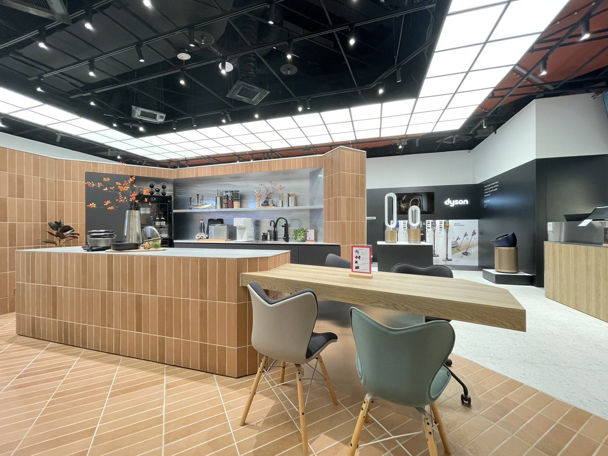

Floor Plan


在家電量販的場域裡，我們把視覺主要的展演區當作一座「亭」來思考——讓人願意停下、靠近、實際操作，對話才會發生，轉換才有可能。空間分為三個層次：前場為展演區，中段為展售區，後場為庫存動線。展演區以可操作的中島與長桌為核心，檯面高度依真實使用配置；展售區以情境牆與模組層架組成，能快速切換不同品牌與主題。地坪以磚紅色系斜向鋪排，形成導向箭頭，把人流精準帶到體驗島。以體驗為先，讓示範引出對話、對話轉成成交。
In a consumer electronics retail environment, we designed the main display zone as a pavilion — a place where people are willing to stop, approach, and actually try. Conversation follows; conversion becomes possible. The space divides into three layers: front for demonstration, middle for browsing and sale, back for inventory flow. The demonstration zone centers on operable islands and long tables calibrated to real-use height. The sales zone uses modular shelving with pre-wired connection points for rapid brand and theme rotation. Brick-red floor tiles laid diagonally form directional arrows, guiding foot traffic precisely to the experience island. Experience first: demonstration generates conversation, conversation generates sale.
Floor Plan


磚紅色系斜向地坪是整個空間最安靜的設計決定，也是最有力的。斜向鋪排製造了方向性，不需要任何標誌，人流自然被帶向體驗島。顏色是磚紅，不是品牌色，這個選擇讓地坪成為空間的語言，而不是任何一個展示品牌的延伸。


展演工作面一律使用鈦鋼石——乾淨、好清理、低反射，讓操作被看得更清楚。展售區回到黑與白作為中性背景，統一不同品牌的視覺，不與商品爭搶焦點。台灣製黑白水磨石地坪，礦物顆粒讓黑與白更溫潤，也增加細節層次。選材的邏輯只有一個：讓商品站出來，空間退後。


上方不做完整天花，改以大面積燈板取代，均勻補光、降低眩光，視線更乾淨。這個選擇不是為了省成本，而是為了讓光線不成為焦點。在一個以操作體驗為核心的空間裡，任何搶話的設計都是干擾。燈板退場，商品的細節才能被看見。
All Photos